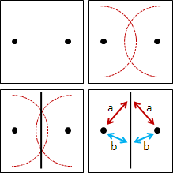
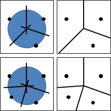
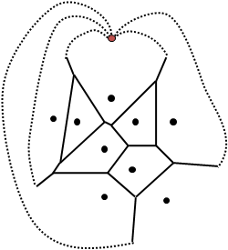
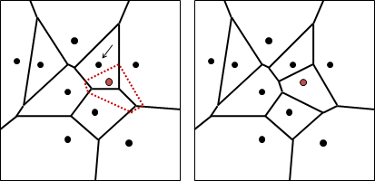
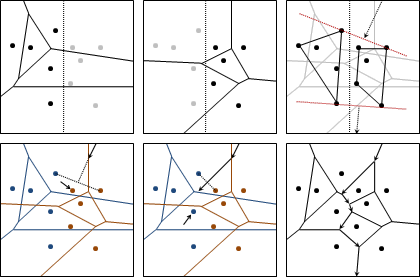

Voronoi Diagram
程度★ 難度★★
Voronoi Diagram
平面上散布許多點。互相鄰近的點，以中垂線劃分區域，就形成了Voronoi Diagram。Voronoi是發明者的姓氏。
換個角度看。平面上每一處，各自歸類於最近的點，就形成了Voronoi Diagram。自然而然的，中垂線成為了分界線。
仔細來說，Voronoi Diagram是分界線組成的集合。
Voronoi Diagram是自然的圖案，諸如長頸鹿身上的斑紋、葉片的細胞結構等等，應用相當廣泛。
Voronoi Diagram隱含著鄰近的資訊，所以「最靠近」、「距離最短」之類的問題，多半可以透過Voronoi Diagram解決。
Perpendicular Bisector
「中垂線」，國中數學有教，看圖便知，不再贅述。
三角形的三中垂線，交於一點，是外接圓圓心，稱作外心。中垂線有等距、平分的感覺，圓有等距、歸心的感覺，兩者之間是有點曖昧。
由此可知，Voronoi Diagram一個點至少連著三條邊。
Voronoi Diagram點和邊的數量
Voronoi Diagram看上去就像個平面圖。運用平面圖歐拉公式v-e+f=2，輔以「一個點至少連著三條邊」的限制，可以推理出Voronoi Diagram最多有2N-5個點、3N-6條邊，都是O(N)。
延伸閱讀：Farthest Point Voronoi Diagram
既有最近，亦可最遠。平面上每一處，各自歸類於最遠的點，就形成了Farthest Point Voronoi Diagram。
其分界線，皆是相離最遠的點的中垂線；相離最遠的點，自然而然都在凸包上，證明請參考「Farthest Pair」。
更進一步。平面上每一處，各自歸類於第k近的點，就形成了Order k Voronoi Diagram。至於這有什麼用途，我也不知道。
延伸閱讀：勢力消長
每個點設定不同的強度，兩點之間依照其強度比例劃定界線。理論上可以生成所有平面圖？
Voronoi Diagram: Half-plane Intersection
程度★ 難度★
枚舉每一點，求得該點的區域：與其他點形成的N-1條中垂線，求半平面交。時間複雜度為O(N * NlogN)。
Voronoi Diagram: Incremental Method
程度★ 難度★★
online演算法，一次加一點。先找到離當前輸入點最近的點，然後以中垂線繞行一圈求得當前輸入點的區域。
由於Voronoi Diagram的點數和邊數都是O(N)，就算是窮舉路線轉折點所在的邊，整體時間複雜度仍是O(N^2)。
附帶一提，當給定的點都在凸包上時，使用Randomized Incremental Method可達O(N)。
http://www.cs.dartmouth.edu/reports/TR90-147.pdf
UVa 12311
Voronoi Diagram: Divide and Conquer
程度★ 難度★★★
所有點分成左右兩側，分別求出Voronoi Diagram，然後合而為一。合併Voronoi Diagram必須用到凸包，求得左右兩凸包的外公切線的中垂線，因此必須同時計算凸包與Voronoi Diagram。
從左右凸包的外公切線的中垂線開始行進，一旦撞到左或右的Voronoi Diagram，就重新調整中垂線方向。
時間複雜度O(NlogN)。
Voronoi Diagram: Fortune's Algorithm
程度★★ 難度★★★
Nearest Neighbor
程度★ 難度★★
ICPC 3270